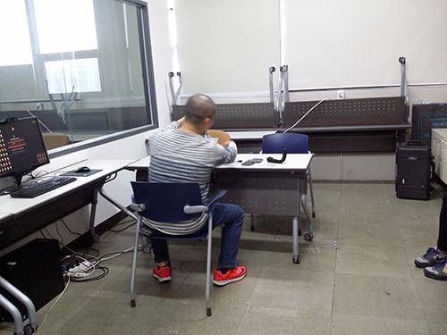
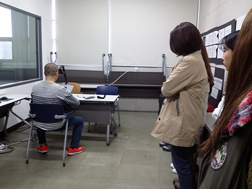

캡스톤 디자인 주간 보고서 [9주차]
| 팀 명 | 11팀 |
|---|---|
| 과제명 | 알바천국 감성 푸쉬 서비스 기획 |
| 회의날짜 | 2016년 10월 25일 ( 14:00 ) ~ 2016년 10월 25일 ( 17:00 ) |
| 참석자 | 성명 | 역할 | 서명 |
|---|---|---|---|
| 안가은 | 회의록 작성, 팀장 | ||
| 김윤신 | 기획 | ||
| 박채원 | 기획 | ||
| 조영지 | 기획 |
| 주간 보고 내용(한주의 내용을 간단하게 정리) |
|---|
|
학교의 UT 스튜디오 안에서 아이 트랙킹(Eye Tracking) 사용자 경로 조사 특강을 진행하였습니다. 첫째로 시선 추적의 원리와 활용성에 대한 강의를 들었습니다.  시선 추적 장비를 사용하여 경쟁 업체 및 기존 제품과 개선된 제품의 비교가 용이하고, 동공의 확장 등을 통해 사용자의 관심 정도를 측정할 수 있다는 점을 알게 되었습니다.   둘째로는 시선 추적 장비를 사용하는 방법을 배웠습니다. 이후 팀원끼리 다시 모여 이번 주의 알바천국 '현위치' 메뉴의 리뉴얼 제안서를 위한 회의 시간을 가졌습니다. 제안서 작성을 위한 사용자 인터뷰 질문지를 작성하여 각각 1명씩 인터뷰를 진행하였고, 레퍼런스를 찾아 분석한 후 시안을 제작하였습니다. |
| 다음 진행 방향 및 계획 |
|---|
| 알바천국 회사를 방문하여 리뉴얼 제안서 검토 및 디벨롭 |
* 주차별 주간 보고서를 필히 제출